Plaid Agent · paper figures
Selected local snapshots. Source hashes and captions: manifest.
Temporal knowledge graph · implemented schema
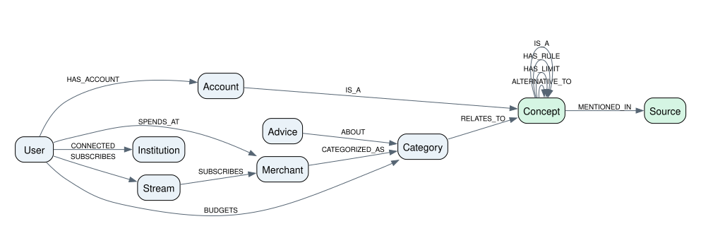
Node types and allowed relationships read from backend/app/kg/store.py. Blue: personal financial entities; green: shared guidance. This is the complete allowed relationship schema, not a populated user snapshot. Every edge carries valid_from/valid_to and recorded_at/expired_at; nodes retain their current display labels.
SVG · PDF · PNGTemporal edge history · two clocks
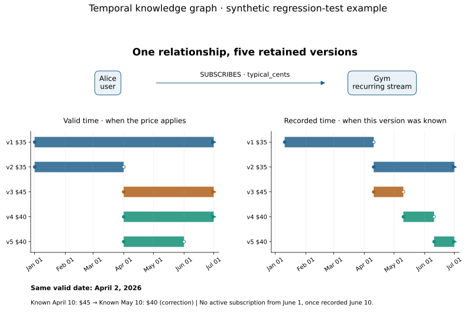
Read directly from the Alice/Gym oracle in backend/tests/kg_query_fixtures.py, not a live account. All five retained edge versions are shown. Filled start / hollow end denote half-open intervals [start, end); arrows mean no recorded end, clipped at July 1 for display. Recorded timestamps are UTC (12:00 on the dated events). Old versions remain available for historical queries. v3 is corrected by v4; v5 records the June 1 closure on June 10. The $35 v2 remains the accepted January–March history.
SVG · PDF · PNGExample 1 · explaining a subscription increase
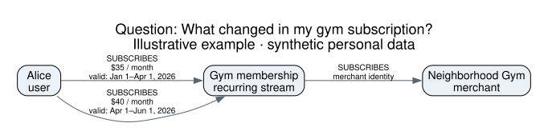
Synthetic teaching example. Illustrative accepted history after a correction; intervals exclude their end date. The adjacent two-clock figure shows how a $45 report was corrected to $40. Price-change facts are supported by backend/app/kg/facts.py. How it is used: Compare dated SUBSCRIBES facts: $35 to $40 is a $5 increase. The merchant link identifies the charge. These are two valid-time versions of one relationship, not two simultaneous subscriptions.
SVG · PDF · PNGExample 2 · gathering context for a budget diagnosis
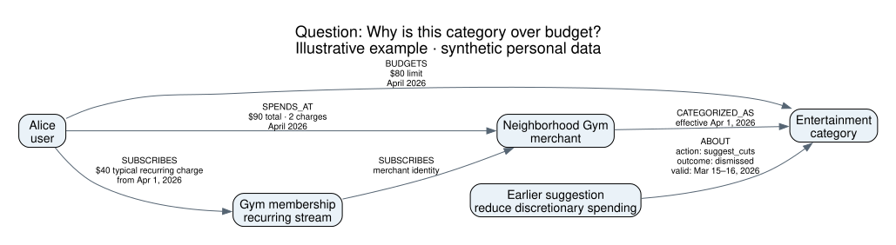
Synthetic teaching example. Amounts and entities are invented to illustrate the implemented projection and budget-context relationships. Monthly totals, limits, recurring amounts, and advice outcomes are edge values. A single dismissal does not trigger the repeated-dismissal suppression rule. How it is used: The monthly spending total ($90) exceeds the $80 limit by $10. Recurring-charge history and the prior dismissed suggestion provide context for diagnosis; the graph alone does not establish the cause or select an action.
SVG · PDF · PNGExample 3 · connecting an account to sourced guidance
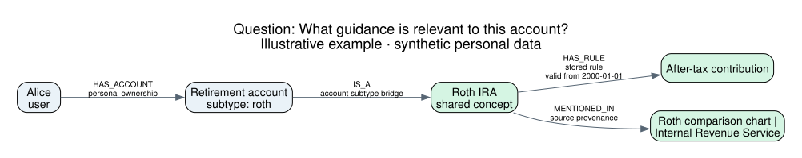
Synthetic teaching example. Alice and her account are synthetic. Green guidance nodes and their two relationships come from the current kb/graph.json snapshot; this is a demonstration of stored evidence, not a current tax-guidance verification. The account bridge follows SUBTYPE_CONCEPTS in project.py. How it is used: The account type links a personal account to a shared concept. That concept connects to a stored rule and its source, providing a retrieval path for an explanation with provenance. This is not a claim that every query traverses this exact path.
SVG · PDF · PNGExample 4 · the same past date, different knowledge
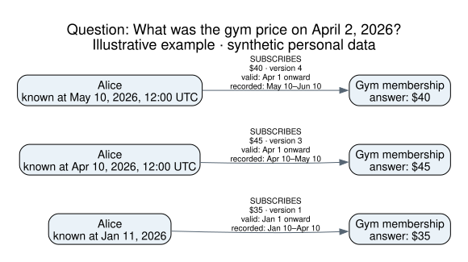
Synthetic teaching example. Three views of the SAME Alice→Gym relationship, not three users or subscriptions. Values and dates illustrate the existing Alice/Gym query-test oracle. All dates are in 2026; recording boundaries are at 12:00 UTC. Intervals exclude their end. The January knowledge view is a historical belief about April, not a guaranteed forecast. “Onward” describes what that retained version asserted at the time; the later closure is shown in the two-clock timeline. How it is used: Hold the valid date fixed at April 2 and change known_at. Before the increase was recorded, the graph returned $35. After the report it returned $45. After the correction it returned $40. Earlier versions remain queryable rather than being overwritten.
SVG · PDF · PNGChat agent workflow
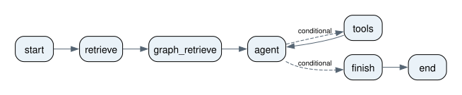
Extracted from backend/app/agents/chat_graph.py. Dashed edges are conditional routes; these are declared paths, not execution frequencies.
SVG · PDF · PNGBudget agent workflow
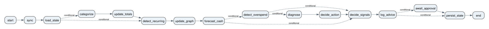
Extracted from backend/app/agents/budget_graph.py. Dashed edges are conditional routes; these are declared paths, not execution frequencies.
SVG · PDF · PNGClose agent workflow
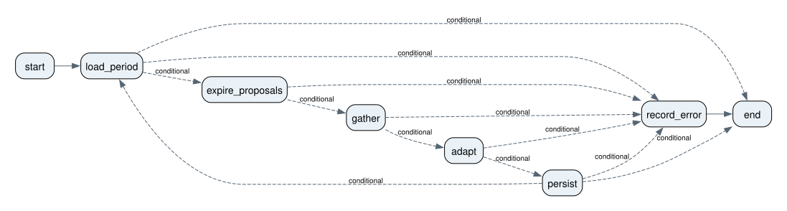
Extracted from backend/app/agents/close_graph.py. Dashed edges are conditional routes; these are declared paths, not execution frequencies.
SVG · PDF · PNGReviewed guidance graph
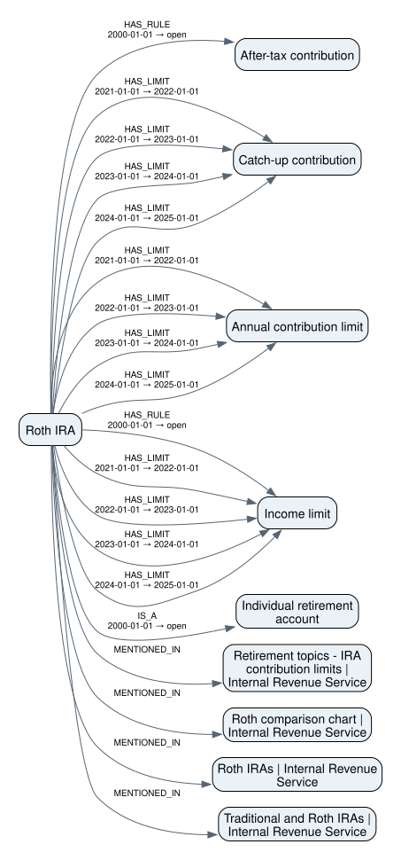
All one-hop edges around roth-ira in kb/graph.json. Dates are stored validity intervals. Open means no recorded end; this is a guidance snapshot, not live financial data.
SVG · PDF · PNGqwen2.5:14b evaluation snapshot
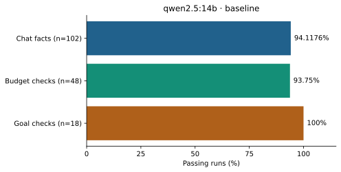
eval/results/2026-11-05/qwen2.5_14b-baseline. Run-level rates, not majority-of-three scenario verdicts. Retrieval: hybrid; graph: on; commit: 635b52972fe1653ce6942393594c8799da20357a. Each panel describes its own sample; cross-run comparability is not assumed.
SVG · PDF · PNGllama3.1:8b evaluation snapshot
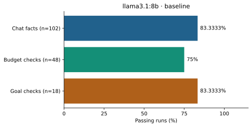
eval/results/2026-11-05/llama3.1_8b-baseline-2. Run-level rates, not majority-of-three scenario verdicts. Retrieval: hybrid; graph: on; commit: 635b52972fe1653ce6942393594c8799da20357a. Each panel describes its own sample; cross-run comparability is not assumed.
SVG · PDF · PNGmistral evaluation snapshot
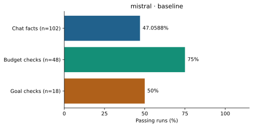
eval/results/2026-11-05/mistral-baseline. Run-level rates, not majority-of-three scenario verdicts. Retrieval: hybrid; graph: on; commit: 635b52972fe1653ce6942393594c8799da20357a. Each panel describes its own sample; cross-run comparability is not assumed.
SVG · PDF · PNGModel comparison
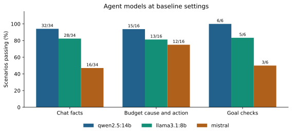
eval/results/2026-11-05. A scenario passes on at least 2 of 3 runs at temperature 0; labels give passing/total scenarios. Hybrid retrieval, graph on, retries on. Judge gemma3:12b.
SVG · PDF · PNGChat retrieval modes
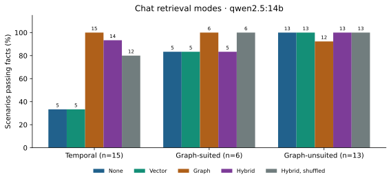
eval/results/2026-11-05. Fact pass by preregistered scenario group, majority of 3 runs; bar labels are passing scenario counts. Shuffled keeps the graph facts' length but breaks their link to the question. Temporal scenarios were written by the graph's builder.
SVG · PDF · PNGBudget improvement over periods
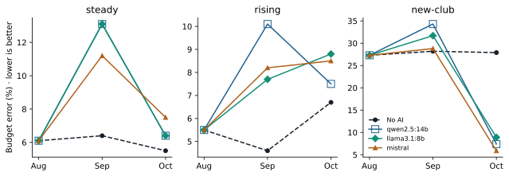
eval/results/2026-11-05. One pass per model over three closed periods; the dashed line is the close logic with no model. Proposals were applied under a human approve-all policy, not the preregistered rubric. On steady, qwen2.5:14b and llama3.1:8b give identical errors, so their lines overlap (hollow squares are qwen2.5:14b).
SVG · PDF · PNGInitial budget accuracy
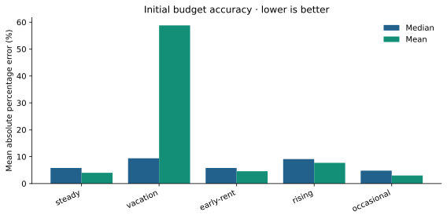
eval/results/2026-10-31/budget_accuracy/results.json. Synthetic profiles: May–July fit, August holdout. Percentage error excludes zero-actual categories; this is initial budgeting, not longitudinal AI improvement.
SVG · PDF · PNG